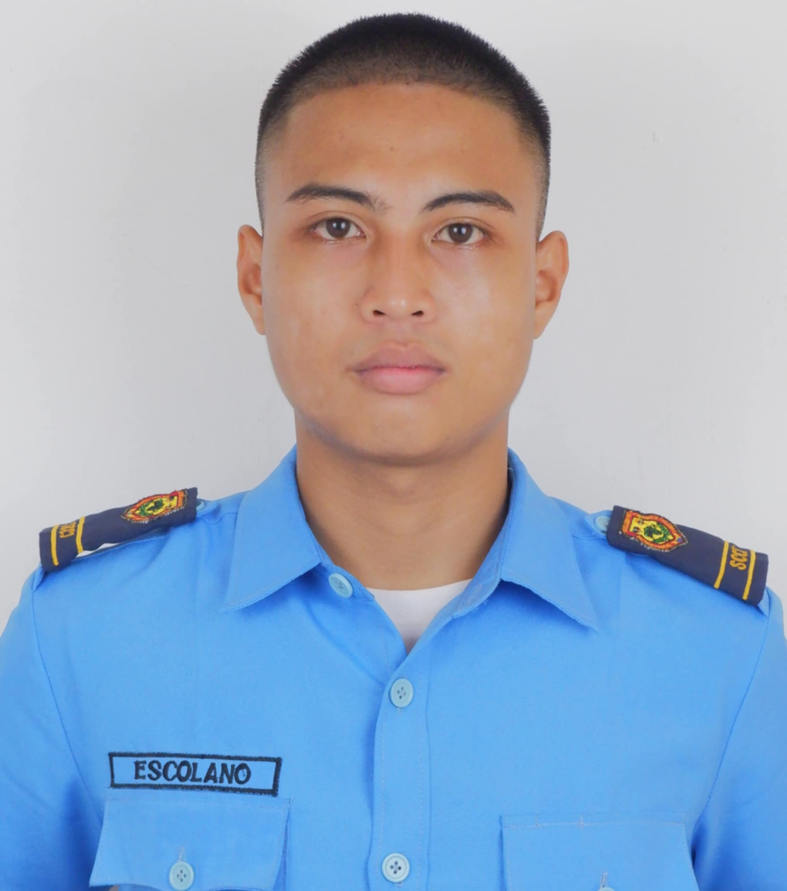

LAURENCE HILIS-ESCOLANO
AN AUTOBIOGRAPHY

Laurence Hilis Escolano
Hello! My name is Laurence H. Escolano, I was born on November 29, 2004 in Cabigaan Gubat Sorsogon.
I came from a humble and loving family that has always been my source of strenght and inspiration.
Growing up in Cabigaan Gubat Sorsogon, my Childhood was filled with laughter, learning, and simple joys
that shaped who i am today. As a child, i was curios and eager to explore the world around me.
I spent hour playing outdoors with my siblings, cousins and friends, climbing trees, and creating imaginative adventures. I am the third born of Eva Hilis-Escolano
and Roberto Feratero-Escolano.